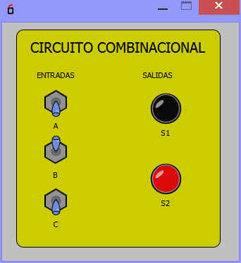
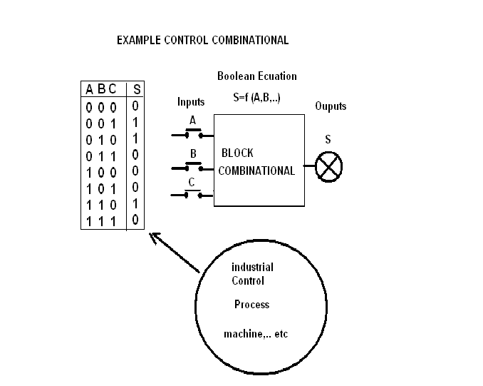

Este bloque permite implementar funciones de tipo combinacional coon un determiando numero de entradas y de salidas.
Las entradas seran las variables logicas independientes de la función y la salida o salidas serán las variables dependientes.

